Clarity first
I start with what someone needs to do, then give that action room to stand out.
A little about me
Product builderIdeas real things
Built with careDown to the details.
Frontend developer
Web + mobileMade in Kazakhstan
I build digital experiences
people actually enjoy.
Thoughtful interfaces, smooth interactions.
From the first idea to the details that make it feel right.
Selected projects
Web applications, mobile products and experiments. Different problems, one focus: making the interface feel right.
All projectsClasses, assignments and conversations. One connected learning platform.
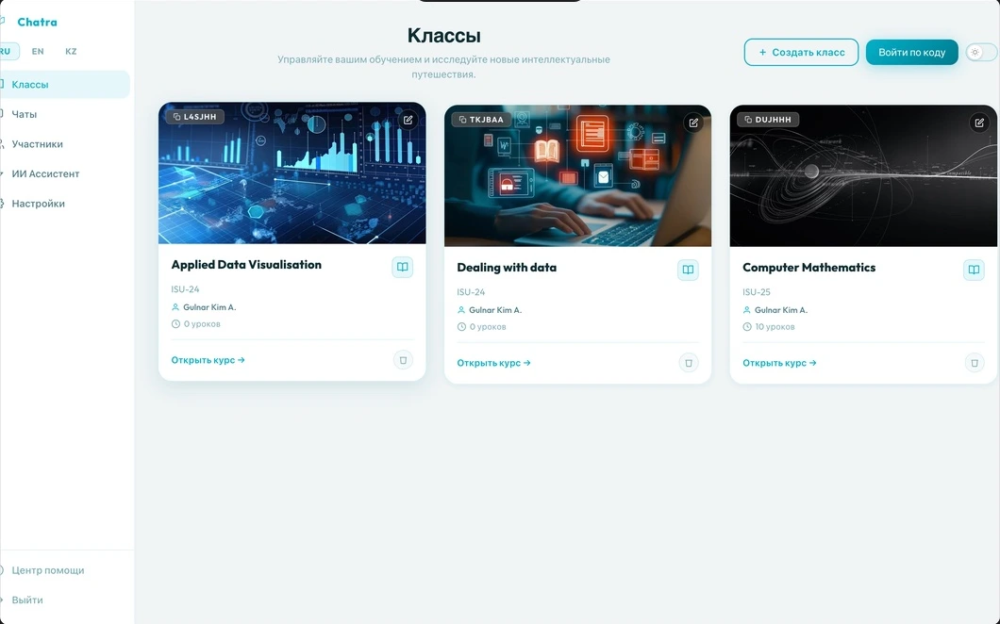
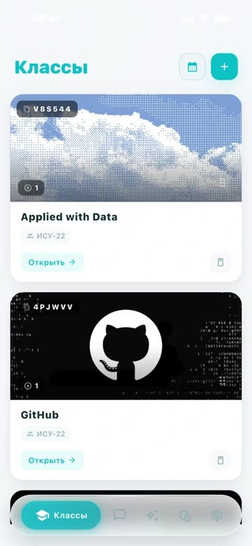
A family practice platform with AAC and explainable activity plans.
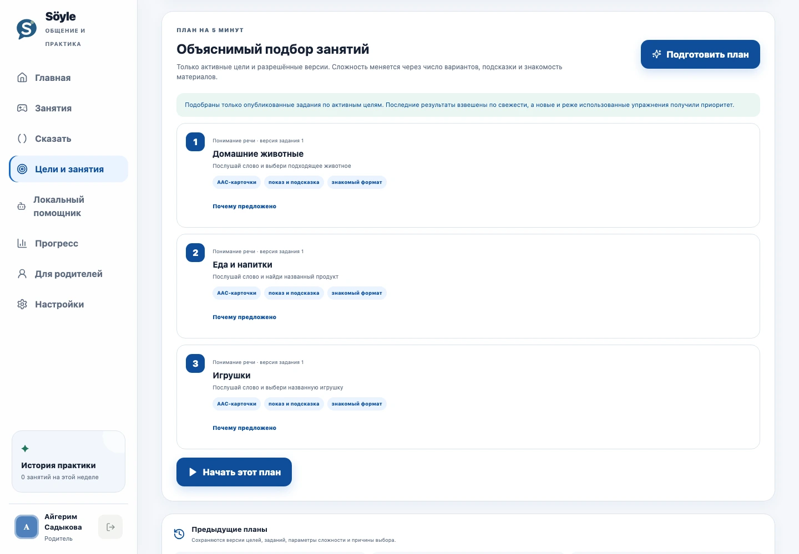
Programme discovery, applications and learning workflows.
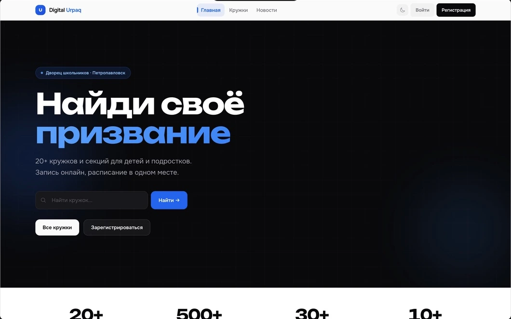
A financial workspace concept for freelancers.
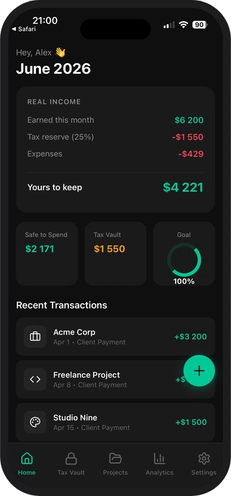
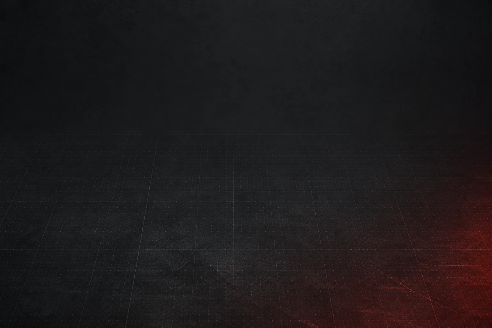
A token scanner that brings risk signals into one dashboard.
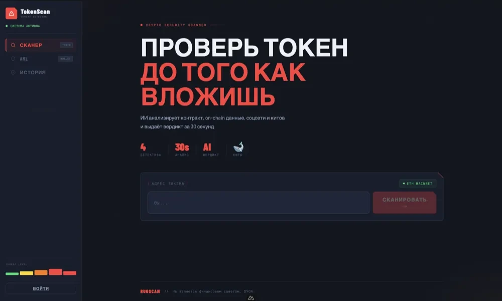
The service layer behind connected classroom experiences.
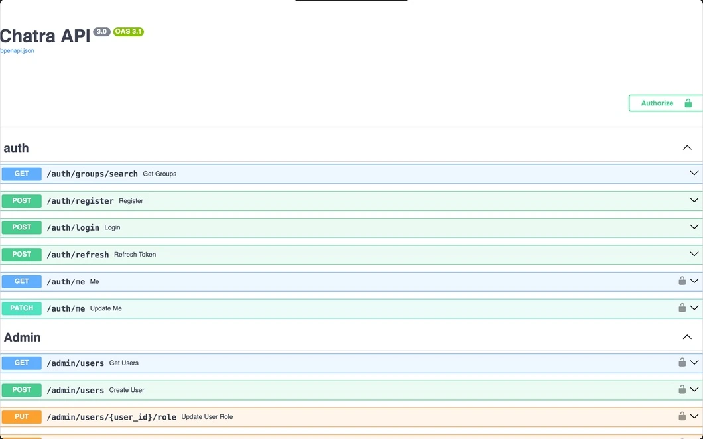
From an unstructured problem to a testable project brief.
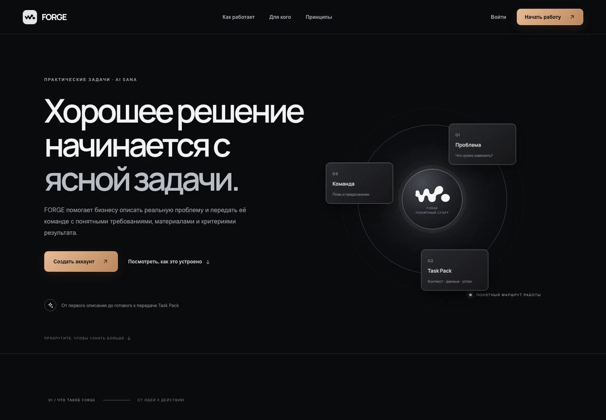
Earlier interfaces, mobile work and the projects I learned from.
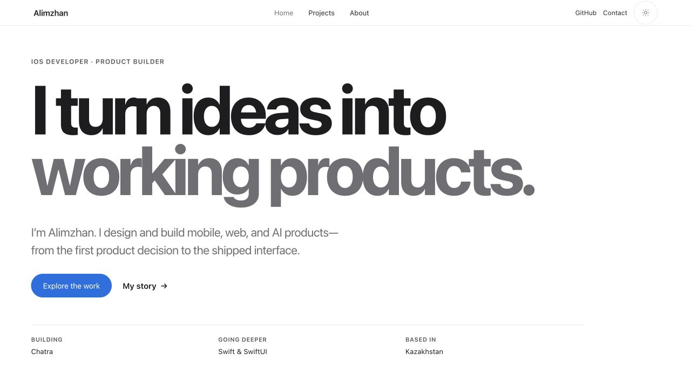
How I work
I like working on both sides of an interface: deciding how it should feel, then building the details that make it work.
Clear in use. Careful in code.
I start with what someone needs to do, then give that action room to stand out.
I use motion to explain a change, not to make people wait for it.
I test narrow screens, touch targets and keyboard navigation while I build.
I think about the data, permissions and failure states behind the interface.
Frontend is where I focus.
A wider toolkit connects the interfaces I build to mobile apps and the services behind them.
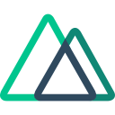
NuxtA new idea starts with a conversation
Tell me what you’re working on.
We can figure out the next step together.
Good things start small.One message is enough.
LET’S